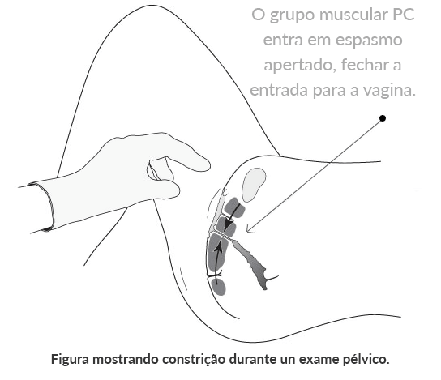

Diagnóstico e Exames
O diagnóstico médico é tipicamente determinado por exame ginecológico para descartar a possibilidade de outras condições médicas e analisando o histórico da paciente.
Diagnóstico Rápido
Fortes indicadores de vaginismo incluem qualquer um dos seguintes (veja Sintomas do Vaginismo para obter informações mais detalhadas):
Problemas com a Penetração
Penetração difícil ou relação sexual impossível/casais não consumados. Problemas femininos com a penetração e casamentos não consumados são tipicamente devidos ao vaginismo. Sensação de aperto vaginal excessivo e dor durante a entrada do pênis na vagina são sintomas comuns do vaginismo.
Problemas de Saúde
Dor sexual frequente depois de um problema pélvico, problema de saúde ou cirurgia. A experiência da dor sexual frequente ou aperto vaginal excessivo depois de curar ou tratar de um problema de saúde ou dor pélvica é tipicamente devido ao vaginismo (veja também dispareunia).
Nenhuma Causa Física Aparente
Dor sexual frequente e aperto vaginal com nenhuma causa física aparente. O vaginismo geralmente ocorre somente durante as tentativas de sexo. Os médicos podem, inicialmente, ser incapazes de encontrar problemas ou causas para as dificuldades sexuais.
Evitamento do Sexo
Evitamento de relações sexuais devido à dor e/ou fracasso. Quando uma mulher afirma que evita intimidade com seu marido porque o sexo é desconfortável ou se tornou muito doloroso, o vaginismo deve ser fortemente considerado.
Após o Parto Normal
Dor sexual frequente ou aperto vaginal durante o sexo após parto normal (depois do total restabelecimento da mãe) é tipicamente devido ao vaginismo secundário.
O Diagnóstico Médico do Vaginismo
As mulheres muitas vezes suspeitam que têm vaginismo devido aos seus sintomas, mas obter uma confirmação médica pode ser um desafio. O diagnóstico formal de vaginismo pode exigir algum planejamento e perseverança. Não existe um exame médico definitivo para diagnosticar o vaginismo, por isso podem ser necessárias algumas consultas com vários médicos ou especialistas para obter um diagnóstico médico.
Quando os médicos são inicialmente incapazes de encontrar problemas médicos específicos (uma experiência comum para quem sofre com o vaginismo), nenhum diagnóstico ou um diagnóstico errado é o que geralmente resulta dos exames médicos iniciais.
As mulheres podem precisar advogar fortemente por si mesmas, insistindo em um diagnóstico completo de um profissional experiente para descartar qualquer outro problema de saúde e confirmar o diagnóstico vaginismo.
Muitos médicos não estão familiarizados com o vaginismo; sendo assim, parte do processo é simplesmente encontrar um médico que tenha conhecimento sobre essa disfunção. Um diagnóstico médico bem sucedido de vaginismo é normalmente determinado pelo histórico da paciente e a descrição do problema, o exame ginecológico e o processo de eliminação de outros problemas de saúde. Falar com médicos sobre problemas sexuais pode ser difícil. Constrangimento, vergonha e ansiedade estão muitas vezes presentes, tornando difícil a comunicação e a obtenção do tratamento apropriado.
Um diagnóstico médico é útil para tirar quaisquer dúvidas ou ansiedade relacionadas com a identificação do problema e permite que as mulheres tenham mais segurança em procurar um tratamento. Transtornos de dor sexual como o vaginismo são comumente diagnosticados erroneamente ou deixados sem atendimento. As mulheres precisam ser muito corajosas para perseverar até suas preocupações recebam a atenção devida e um diagnóstico médico confiável. Em alguns casos e locais, um diagnóstico médico sólido nem sempre é possível ou encontra-se disponível, especialmente em países com menos opções de atendimento de saúde.
Nossa missão é ajudar a maior número de mulheres possível com esta disfunção.
Esse site detalha informações importantes sobre o vaginismo e convidamos a todos que suspeitam de um possível diagnóstico de vaginismo a ler as várias áreas do site, tais como sintomas, histórias, causas, tratamento, retorno dos usuários/profissionais de saúde e perguntas frequentes, para aprender o máximo possível sobre a disfunção e poder entender melhor a sua própria situação.
Hoje em dia, existem muitos recursos excelentes para ajudar as mulheres a aprenderem sobre o vaginismo e seu tratamento. Os livros de auto-ajuda, os quais podem ser comprados pelo nosso site, oferecem muita informação sobre os sintomas, as causas e o tratamento para uma cura bem sucedida.

Sites médicos, tais como os listados na nossa área de comunidade do vaginismo, podem ajudar as mulheres a encontrarem informações úteis sobre os diferentes tipos de transtornos de dor pélvica para ajudá-las a diferenciar e entender diferentes problemas de saúde. Existem muitos especialistas de diversas áreas que podem ajudar com o diagnóstico e o tratamento de problemas do assoalho pélvico. Fontes de ajuda de diagnóstico vaginismo podem incluir:
- Ginecologistas – um ginecologista é um médico especializado em diagnosticar e tratar problemas de saúde pélvicos. Nem todos os ginecologistas têm experiência com o diagnóstico e o tratamento do vaginismo, mas eles são extremamente experientes e poderão ajudar a excluir outros problemas de saúde, esclarecer questões de saúde e podem ser ótimos aliados no caminho à cura.
- Fisioterapeutas – Existe um número crescente de fisioterapeutas especializados em distúrbios do assoalho pélvico e dor sexual como o vaginismo. Muitos fisioterapeutas trabalham com suas pacientes para desenvolver programas caseiros, permitindo que as mulheres façam os programas em seu próprio ritmo, em privacidade, e a um custo menor. A Associação Americana de Fisioterapia, Journal of Women’s Health Physical Therapy (Revista de Fisioterapia sobre a saúde da mulher), publicou uma recomendação para o uso de nossos materiais para todas as mulheres com vaginismo, e muitos terapeutas usam os materiais para ajudar a orientar suas pacientes através de um tratamento caseiro bem sucedido.
- Terapeutas sexuais, psicólogos e terapeutas – Existem muitos outros especialistas que possuem diferentes graus de experiência com o vaginismo.
Exame Pélvico como Parte do Diagnóstico de Vaginismo
Um dos aspectos mais importantes do diagnóstico de vaginismo é simplesmente a eliminação completa de outros problemas físicos ou disfunções médicas possíveis que podem ser causadores dos sintomas—deixando a quase certeza de que se trata de vaginismo.
O processo de eliminação é uma parte crítica do diagnóstico de vaginismo. O processo de diagnóstico normalmente implica que a paciente relate seus problemas de saúde anteriores e aspectos de seu histórico sexual, além de um exame ginecológico ou pélvico.
O médico discutir a localização e a ocorrência da dor para ajudar a diagnosticar corretamente o vaginismo, ou pode solicitar outros testes para eliminar a possibilidade de quaisquer outros problemas. Observe que algumas mulheres sentem-se mais confortáveis em expressar a si mesmas e serem examinadas por especialistas de saúde também mulheres. Assim, sugerimos que as pacientes procurem ajuda com uma especialista. Ter uma abordagem sistemática e proativa vai ajudar a pessoa a obter um melhor tratamento e melhores resultados.
Desafios Únicos no Diagnóstico do Vaginismo
Ardência, estreitamento e dificuldade com a penetração podem não ser perceptíveis durante o exame pélvico. Para algumas mulheres, estes sintomas ocorrem apenas durante tentativas de relações sexuais. Por este motivo, o profissional de saúde que realizar o diagnóstico deve estar atento às preocupações da mulher que podem ser colocadas de modo vago, como “Estou tendo dificuldades com o sexo.”
Às vezes, os profissionais de saúde ocupados falham em reconhecer os sinais do vaginismo e dão conselhos padrão (mas inúteis) para apenas “usar mais lubrificante”, “tentar relaxar mais”, ou “beber um pouco de vinho”. Isto pode acontecer devido à uma falta de familiaridade com o vaginismo ou uma dependência de livros ultrapassados sobre essa disfunção. Devido às contrações do músculo PC, algumas mulheres com vaginismo acham os exames ginecológicos extremamente dolorosos e são incapazes de tolerá-los. Se uma mulher suspeita que pode ter dificuldade em realizar um exame, ela deve comunicar isso ao médico.
Em vez de reconhecer o vaginismo, um médico pode acreditar erroneamente que a vagina da mulher é muito pequena, quando / se ela não consegue realizar um exame pélvico.
Existem ajustes (por exemplo, o posicionamento do corpo, o tamanho do espéculo utilizado e o apoio da enfermeira) que podem ser feitos para contribuir para uma experiência mais positiva. Um médico familiarizado com o vaginismo poderá prover um ambiente confortável e sensível.
Quando não há estreitamento vaginal constante durante o exame pélvico, pode parecer para o médico que a mulher possui uma vagina pequena ou um algum problema com o hímen.
Isto, junto com uma queixa urgente do paciente que ela não consegue fazer sexo com penetração com o esposo ou que o sexo realmente dói, pode levar à falsa impressão de que a vagina requer cirurgia corretiva para alargar a abertura e permitir a entrada do pênis.
Embora possam haver raras exceções, as mulheres com vaginismo normalmente possuem genitália completamente normal. O estreitamento vaginal é devido exclusivamente ao espasmo involuntário dos músculos do assoalho pélvico. Infelizmente, alguns médicos continuam com o exame pélvico causando grande desconforto e dor para a mulher. Esta experiência traumática pode contribuir para intensificar o vaginismo.
Com o vaginismo, a simples aproximação da mão de um médico pode levar à contração dos músculos do assoalho pélvico, fazendo a entrada vaginal parecer muito pequena e estreita. Observe que nem todas as mulheres com vaginismo sentem o estreitamento durante um exame médico (isso pode ocorrer apenas durante as tentativas de sexo).
Há muitos perigos em receber um diagnóstico incorreto de um profissional desinformado. Cirurgias e medicamentos desnecessários, invasivos e potencialmente prejudiciais têm sido sugeridos para mulheres com vaginismo que não foram diagnosticadas corretamente. Erros de diagnóstico e a recomendação de cirurgias invasivas ou inúteis são, por vezes, o resultado infeliz de toda essa confusão.
Não existe cirurgia para curar o vaginismo. É muito importante procurar uma segunda opinião se a cirurgia para “alargar” a abertura vaginal recomendada.
É muito importante procurar uma segunda opinião se a cirurgia para “alargar” a abertura vaginal for recomendada, pois além de não resolver o problema da penetração, ela pode complicar ainda mais o problema. Cirurgias e medicamentos desnecessários, invasivos e potencialmente prejudiciais têm sido sugeridos para mulheres com vaginismo que não foram diagnosticadas corretamente.
O vaginismo é altamente tratável e não requer nenhum procedimento invasivo (veja Tratamento do Vaginismo). Muitas mulheres que procuram um diagnóstico muitas vezes não recebem um diagnóstico e ainda escutam dos médicos que devem ir para casa, pois o especialista não consegue encontrar nada de errado fisicamente com elas e sentem que não há nada mais que ele possa fazer. O médico pode não considerar um diagnóstico de vaginismo devido à simples falta de conhecimento.
Roteiro: História da Dor Sexual Auto-Orientada
Para ajudar as mulheres na obtenção de um diagnóstico confiável para a dor sexual, o roteiro a seguir inclui dicas úteis para se preparar para uma consulta com o médico. O roteiro fornece exemplos relacionados com o vaginismo, no entanto, ele pode ser facilmente modificado para ajudar a comunicar os detalhes de qualquer problema de dor sexual ou pélvica:
1. Introduza o Problema
“Eu tenho tido problemas com a dor durante o sexo e espero que você possa me ajudar.”
2. Descreva a Dor (Seja Específica)
Isso acontece quando… “meu marido tenta inserir seu pênis na minha vagina” ou “uma vez que ele está lá dentro e começa a se movimentar, tenho uma sensação de ardência e me contraio,” etc.
A Dor Está Localizada… “na entrada da minha vagina. Minha vagina é como uma parede; ele simplesmente não consegue entrar” ou “depois que ele está dentro, sinto uma ardência ao redor do pênis perto da entrada,” etc.
A Dor Dura… “enquanto ele continuar tentando, especialmente se tentarmos forçar a entrada do pênis. Quando ele para, não sinto mais dor.”
Isto vem acontecido desde… “a nossa lua há dois anos e continua a acontecer cada vez que tentamos fazer sexo” (vaginismo primário) ou “a minha histerectomia há oito meses” (vaginismo secundário), etc.
Sinto como… “ardências” … “agulhadas” … “como se ele estivesse batendo em uma parede” … “estreitamento durante/na entrada,” etc.
Tentei reduzir ou eliminar a dor… “usando lubrificante, mudando de posições sexuais, relaxando mais.”
Eu consigo/não consigo… “inserir um absorvente interno ou realizar um exame ginecológico completo.”
3. Mencione Quaisquer Problemas Anteriores
Você já teve doença sexualmente transmissível sexualmente, infecções fúngicas, problemas de bexiga ou qualquer dor pélvica além da penetração?
4. Mencione Qualquer Abuso Sexual Anterior
5. Fale o Que Você Acha Ser o Problema
“Eu acho que pode ser vaginismo. Meus sintomas são semelhantes aos descritos em um artigo que li. No entanto, eu li outras coisas que podem causar dor durante o sexo e eu gostaria de descartá-las.”
Observação: Informe o médico se você conseguia ter relações sexuais sem dor anteriormente.